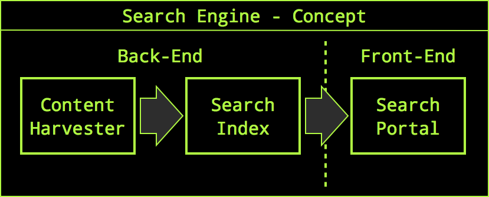
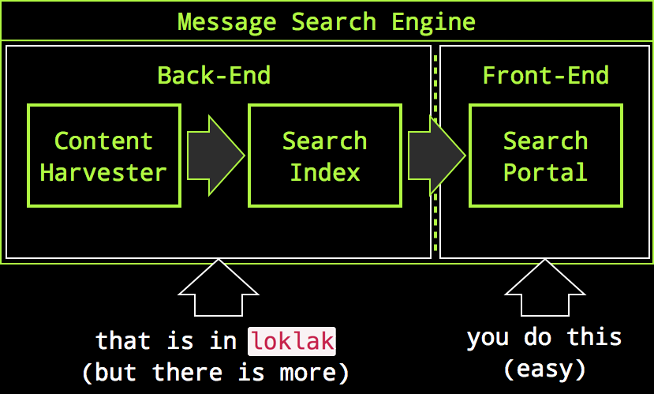
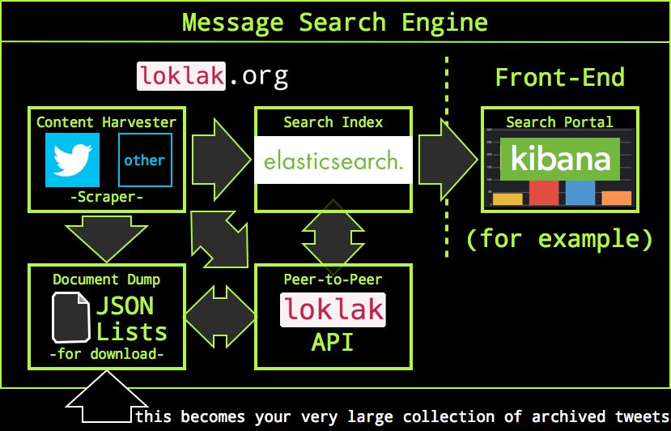
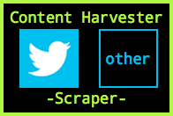
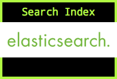
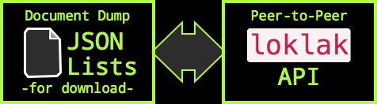

About loklak
This is a server application which is able to collect messages from various sources, including twitter. The server contains a search index and a peer-to-peer index sharing interface.
Why Should I Use This?
If you like to be anonymous when searching things, want to archive tweets or messages about specific topics and if you are looking for a tool to create statistics about tweet topics, then you may consider loklak. With loklak you can do:
- collect and store a very, very large amount of tweets and similar messages
- create your own search engine for tweets
- omit authentication enforcment for API requests on the twitter plattform
- share tweets and tweet archives with other
loklakusers - search anonymously on your own search portal
- create your own tweet search portal or statistical evaluations, i.e.:..
- use Kibana to analyze large amounts of tweets as source for statistical data. That will look like:

We Capture Messages With Distributed Scrapers
If you want to create an alternative twitter search portal, the only way would be to use the official twitter API to retrieve Tweets. But that interface needs an OAuth account and it makes your search portal completely dependent on Twitters goodwill. The alternative is, to scrape the tweets from the twitter html search result pages, but Twitter may still lock you out on your IP address. To circumvent this, you need many clients accessing twitter to scrape search results. This makes it neccessary to create a distributed peer-to-peer network of twitter scrapers which can all organize, store and index tweets. This solution was created with loklak.
Best of all: we made this very generic to integrate different microblogging services, so this may be the incubator for an independent short message or twitter-like plattform.
Not A Search Portal
Search portals consist of many components, the most prominent parts are content harvesters to aquire searchable content, a search index which provides fast and efficient access to the data and a search front-end containing the user webpages and result display servlets:
Most search portals differ in the way how they display search results but have the almost same back-end to create the search index. We want to support the creation of message/twitter search portals but the neccessary and most generic part needs to be coded only once, even if we want several or even many differnt search front-ends:
So it's on you to create a message search portal, but the very hard part for this was already done by us. However, the front-end may also instantly be there (i.e. you can just use Kibana).
Collect Messages
Collected messages are processed to two storage targets: an elatsicsearch search index and a backup- and transfer dump.
Short-Links are De-Shortened
To use as most possible characters in every tweet message up to 140 characters, links are shortened in all tweets. First users used independent shortener serverices but now twitter shortens even already pre-shortened links again. We remove the shortening of almost all links in the tweets and reveal the original URL the user has attached to their tweets. This is very important when archiving tweets because shorteners may not be available in the future but it gives you another privacy advancement because the shortener services cannot track you for their purposes (yes there are business models on that). loklak can even de-shorten recursively, multi-shortened links.
Anonymous Harvesting and Search
Anonymity is provided with different methods:
- The
loklakserver does not record client IP-adresses when a search is done, therefore loklak.org, runningloklakdoes also not record or log IP addresses from searchers. - You can run
loklakyourself which gives you complete control over logged things (where no IP addresses are, but whatever). - Using a scraper, it is possible to break out of Twitters OAuth-Prison, you don't need an account to harvest tweets. 
- If you don't want to search on loklak.org and also don't want to scrape data from Twitter, you can still search in your own index and feed this index with import files from other
loklakpeers. (Look out for the 'Dumps' menu item in the top right corner.)

- The built-in short-link de-shortener protects you from tracking by short-link services, including Twitter.
Distributed, Peer-to-Peer
loklak instances can be connected to each other. If you download loklak and run it unchanged, it connects to loklak.org by default as a back-end peer. You can change this if you want to. Thats what connected peers do:
- Whenever a peer aquires new tweets, it reports these to the back-end for storage. This means that fresh tweets are stored at four locations: your own elasticsearch index, your own message dump file and in the remote back-end-peer in the elasticsearch index and dump file. This causes that all messages that you find are available for download for other users at the back-end which is by default loklak.org. 
- Whenever a peer starts up, it calls the back-end to announce it's existence. This fills a peer-table in the back-end which everyone can use to retrieve the list of active peers. Therefore everyone can identify peers which may provide message-lists for download.
- Any topology can be achieved when the user changes the host name of the back-end. You can create your own message-sharing network easily.